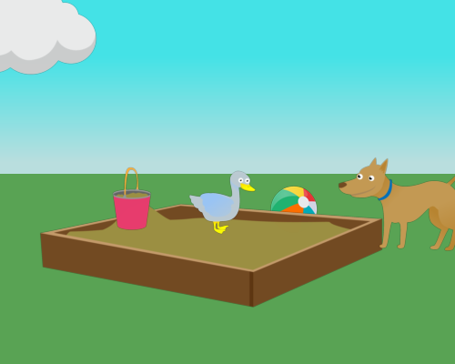
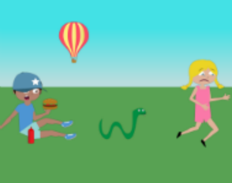

Abstract Scene Ranker
Instructions
In this task you will look at a series of images and image descriptions (captions) created by a computer program.
At every step, you will be presented with images and three (3) descriptions for each image. You will be asked to judge whether the descriptions are relevant (accurate and informative) to the image. You will rate every description in 1-5 rating scale, where 5 is the highest possible rating and 1 is the lowest.
Please keep in mind that:
- There are no correct answers, feel free to choose the rating that feels most appropriate - it is a valid response.
- The objective of the rating is not to mark the best possible description. You can give high score to more than one description if they are accurate and informative.
Examples
-
Suppose you are given the following image and description:

Mike and Jenny are playing ball.
This description will get a high rating (4 or 5), since it is accurate and captures a significant aspect of the image.
-
Suppose you are given the following image and description:

Mike is in the sandbox.
This isn't a good description, as it only marginally relates with the image.
-
Suppose you are given the following image and description:

Mike is holding a hamburger.
While the description is accurate and relevant to the image, it fails to capture the most interesting or central aspect of the image. Therefore, it should be given a medium rating (around 3).
Thank you for your participation.
If you have any questions, you can email to blablabla@blabla